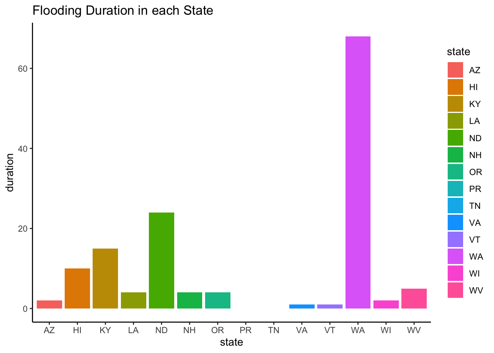
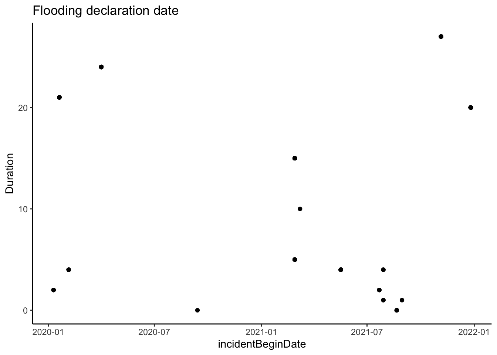
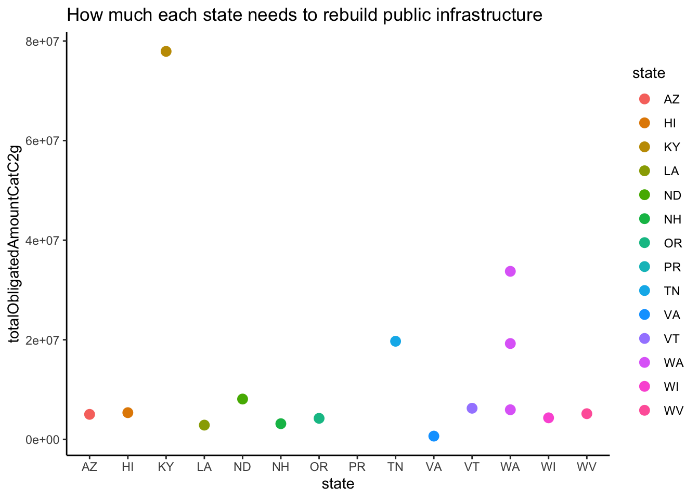
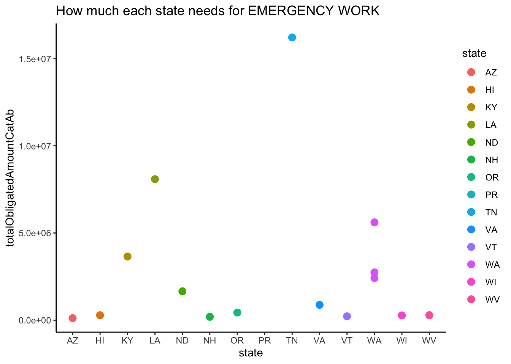

#FEMA
DisasterDeclarations <- read_csv("DisasterDeclarationsSummaries.csv")
FEMAWeb <- read_csv("FemaWebDisasterSummaries.csv")
#2020
ST5_2020 <- read_csv("ACSST5Y2020.S1701-Data.csv")
ST5_2021 <- read_csv("ACSST5Y2021.S1701-Data.csv")
DP5_2020 <- read_csv("ACSDP5Y2020.DP05-Data.csv")
DP5_2021 <- read_csv("ACSDP5Y2021.DP05-Data.csv")
DT5_2020 <- read_csv("ACSDT5Y2020.B25001-Data.csv")
DT5_2021 <- read_csv("ACSDT5Y2021.B25001-Data.csv")MA615 MIDTERM PROJECT
Assignment
Data Cleaning
I only interested in flood between 2020 and 2021, so I will do some data cleaning to keep the information that are related
#FEMA
DisasterDeclarations <- DisasterDeclarations %>% filter(incidentType == "Flood" & year(incidentBeginDate) %in% c(2020,2021))
# 仅保留以"Estimate!!"开头的列
DP5_2020 <- DP5_2020 %>% select(ends_with("E"))
DP5_2021 <- DP5_2021 %>% select(ends_with("E"))
DT5_2020 <- DT5_2020 %>% select(ends_with("E"))
DT5_2021 <- DT5_2021 %>% select(ends_with("E"))
ST5_2020 <- ST5_2020 %>% select(ends_with("E"))
ST5_2021 <- ST5_2021 %>% select(ends_with("E"))Drop all the columns that only contains NA value
Initial questions
I am interested in how long the flooding lasts in every state and the cost.
#FEMA data
FEMABegainDate <- as.Date(DisasterDeclarations$incidentBeginDate)
FEMAEndDate <- as.Date(DisasterDeclarations$incidentEndDate)
Duration <- FEMAEndDate - FEMABegainDate
DisasterDeclarations <- cbind(DisasterDeclarations,Duration)
DisasterDeclarations$Duration <- as.numeric(gsub("[^0-9]", "",DisasterDeclarations$Duration))
DD_count <- DisasterDeclarations %>%
group_by(incidentBeginDate,state) %>%
count(duration = Duration)Plotting
ggplot(DD_count) +
aes(x = state, y = duration, fill = state) +
geom_col() +
scale_fill_hue(direction = 1) +
theme_classic() + labs(title="Flooding Duration in each State")
The first graph shows that WA state has the most flooding duration, PR and TN have the lowest day of flooding. The reasons that WA has a long time flooding duration is because it has lots of rivers.
ggplot(DisasterDeclarations) +
aes(x = incidentBeginDate,y=Duration) +
geom_point() +
theme_classic()+ labs(title = "Flooding declaration date")
This plot indicates that the flooding usually has a higher duration and more flooding during first half of the year
Next, I want to see the funding that each states to rebuild the infrastructure
filterfema <- FEMAWeb[FEMAWeb$disasterNumber %in% DisasterDeclarations$disasterNumber,]
filterfema$state <- DisasterDeclarations$state[match(filterfema$disasterNumber, DisasterDeclarations$disasterNumber)]
ggplot(filterfema) +
aes(
x = state,
y = totalObligatedAmountCatC2g,
colour = state
) +
geom_point(shape = "circle", size = 3) +
scale_color_hue(direction = 1) +
labs(
title = "How much each state needs to rebuild public infrastructure"
) +
theme_classic()
From this graph, it shows that KY needs the most funding to rebuild infrastructure, this is because KY is the seventh poorest state among all state in US, the poverty rate of KY is 14.9%. Although KY ranks the third poorest state in this plot, it needs most funding since it has a higher flooding duration too.
More data cleaning for the next step of analysis
census_population1 <- DP5_2020 %>%
mutate(state = sub(".*, ", "", NAME))
census_population1 <- census_population1[-1, ]
census_population <- census_population1 %>%
filter(!is.na(DP05_0001E) & !is.na(as.numeric(DP05_0001E))) %>%
group_by(state) %>%
summarize(population = sum(as.numeric(DP05_0001E)))
census_population <- census_population %>%
mutate(state = gsub('North Dakota', 'ND', state))%>%
mutate(state = gsub('Wisconsin', 'WI', state))%>%
mutate(state = gsub('Oregon', 'OR', state))%>%
mutate(state = gsub('Hawaii', 'HI', state))%>%
mutate(state = gsub('Puerto Rico', 'PR', state))%>%
mutate(state = gsub('Kentucky', 'KY', state))%>%
mutate(state = gsub('Arizona', 'AZ', state))%>%
mutate(state = gsub('Vermont', 'VT', state))%>%
mutate(state = gsub('New Hampshire', 'NH', state))%>%
mutate(state = gsub('West Virginia', 'WV', state))%>%
mutate(state = gsub('Virginia', 'VA', state))%>%
mutate(state = gsub('Louisiana', 'LA', state))%>%
mutate(state = gsub('Tennessee', 'TN', state))%>%
mutate(state = gsub('Washington', 'WA', state))%>%
filter(nchar(state)<3)
census_population <- arrange(census_population, state)
filterfema <- arrange(filterfema,state)
new_filter <- cbind(state=filterfema$state,population=census_population$population,totalObligatedAmountCatAb=filterfema$totalObligatedAmountCatAb)
new_filter <- as.data.frame(new_filter)Now, I want to look at the relationship between the population of each state and the funding they need for the emergency work that needs to be completed within six months. I assume that if a state has a smaller population it will need more funding. This assumption is because the lower population might need to hire more workers to do the emergency work and it will cost higher labor costs.
ggplot(filterfema) +
aes(
x = state,
y = totalObligatedAmountCatAb,
colour = state
) +
geom_point(shape = "circle", size = 3) +
scale_color_hue(direction = 1) +
labs(
title = "How much each state needs for EMERGENCY WORK"
) +
theme_classic()
gg<- ggplot(data = new_filter, aes(x = population, y = totalObligatedAmountCatAb, label = state)) +
geom_point() +
labs(title = "Population vs. Funding need by State on EMERGENCY WORK",
x = "Population",
y = "Funding") +
theme(axis.text.x = element_text(angle=45,hjust=1))
interactive_plot <- ggplotly(gg)
interactive_plotThe graph, it somehow shows that if a state has a lower population, then it will need more funding to complete the emergency work. However, there is an outlier which is the VA state